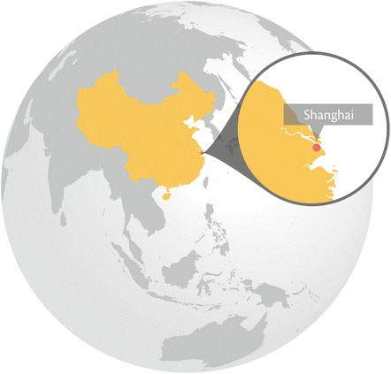
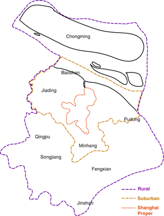
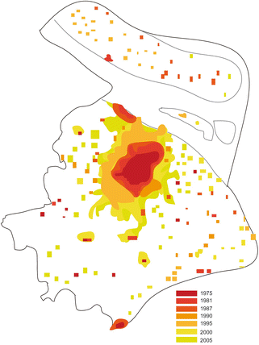
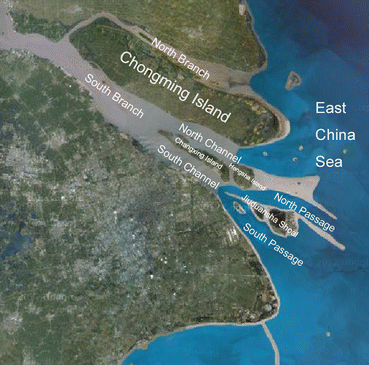
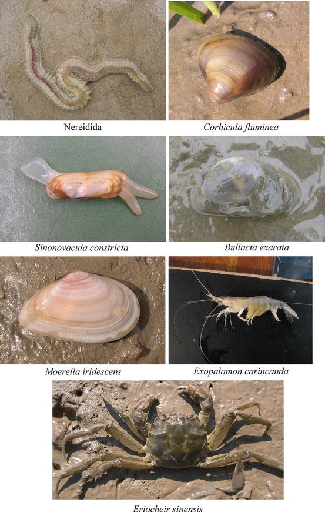

Key Findings
- Shanghai rests on tidal flats and is surrounded by natural and constructed wetlands
- Macrobenthic invertebrates living in the wetlands produce crucial ecosystem services and are important as indicators of the state of the aquatic ecosystems
- The expansion of the city, primarily since the 1970s, has changed the macrobenthic invertebrates’ species composition and decreased the population abundance
- Ecological restoration is one means to support re-introduction of the macrobenthic invertebrates, but is a long-term process
- Supporting mechanisms need specially designed policies, which today are lacking
9.1 Introduction
Shanghai is a coastal metropolitan city, and the largest industrial and commercial city in China. Natural and constructed wetlands account for 23.5 % of the city’s total area (Gao and Zhao 2006). The wetland ecosystems support a diverse array of macrobenthic invertebrates which are important as commercial resources, and as providers of ecosystem services such as water purification, by recycling nutrients, detoxifying pollutants, and dispersion (Gray 1997; Snelgrove 1997).
Shanghai has experienced rapid urbanization over the past three decades, accompanied by rapid acceleration of economic development. The growth of the city has caused a number of ecological problems, including the degradation of air and water quality, alteration of the local climate, a decline in native plant species, and an increase in the numbers of alien plant species (Zhao et al. 2006). Furthermore, tidal flat reclamation by the expanding city, and sewage discharges have led to further degradation of the aquatic natural habitats. This assessment explores the effects of urbanization on biodiversity in Shanghai, focusing on macrobenthic invertebrates, and discusses measures that may contribute to their conservation.
9.2 Shanghai’s Demography, Economy, and Geography
Shanghai is a coastal city resting on the estuary of the Yangtze River. It borders the East China Sea in the east, the Yangtze Estuary in the north, Hangzhou Bay in the south and the Jiangsu and Zhejiang Provinces in the west (Fig. 9.1).

Fig. 9.1
The city of Shanghai and its main districts. The three demarcated areas are from the center and out: Shanghai Proper (red), Suburban Shanghai (yellow), and Rural Shanghai (purple) (Source data from Han et al. 2010. Prepared by and published with kind permission from ©Wenliang Liu 2013) (Color figure online)
Shanghai is the largest industrial and commercial city in China, with its municipal jurisdiction encompassing 17 districts and one county (Chongming Country, including three islands: Chongming, Changxing, and Hengsha Islands). The jurisdiction covers an area of 6,340 km2, including 6,219 km2 of land and 121 km2 of water. Shanghai sits on the alluvial plain known as the Changjiang River Delta, whose foundation was formed in the late Mesozoic Era about 70 million years ago. The Changjiang River deposits large amounts of silt in its estuary, which over time accumulated over 6,000–7,000 years ago to form a growing sand bank. During the Tang Dynasty (618–907) most of the land area that modern-day Shanghai city covers today became dry land. During the Ming Dynasty (1368–1661), land emerged on the eastern bank of the Huangpu River with a coastline that still today remains largely intact. The Changjiang River Estuary in the north has three islands: Chongming, Changxing, and Hengsha. The 1,267 km2 Chongming Island is the third largest island in China and the largest alluvial island in the world. In 1996, a fourth island called Jiuduansha began to form in the estuary (Han et al. 2010).
With the rapid expansion of the city, the urban land area increased exponentially from 159.1 km2 in 1975 to 1,179.3 km2 in 2005 (Fig. 9.2). The slowest annual rate of urban area expansion, 17.7 km2, occurred between 1975 and 1981; the rate then increased to 52.4 km2 between 1990 and 1995; and again to 54.9 km2 between 2000 and 2005 (Zhao et al. 2006). This is consistent with the changes in China’s economic policies, since the country began its economic reform in 1978 and accelerated the process in 1992 (Lin 2002).

Fig. 9.2
Growth of Shanghai from 159.1 km2 in 1975 to 1,179.3 km2 in 2005 (Source data from Zhao et al. 2006. Prepared by and published with kind permission from ©Wenliang Liu)
According to the statistical yearbook of Shanghai in 2011 and 2012, the permanent resident population of Shanghai has reached about 23.71 million. In recent years, the migrant population, i.e. people who come to the city to work but are not registered as Shanghai residents, has grown steadily in peri-urban and suburban areas. In the five districts of Minhang, Jiading, Songjiang, Qingpu and Fenxian, the migrant population has exceeded the registered population. The permanent resident population, i.e., the registered population and the permanent migrant population, is expected to increase in the near future, following an expected increase in the number of newborns. For example, in the first three quarters of 2012 the number of newborns among permanent residents was 160,000; this represents an increase by 13,000 compared with the same period the year before.
Shanghai was the largest and most prosperous city in the Far East during the 1930s, and beginning in the 1990s, development surged. The city’s per capita GDP (Gross Domestic Product) exceeded US$1,000 for the first time in 1990. It rose to US$2,000 in 1995 and surged above the US$10,000 mark in 2008. In 2010, it leveled at US$11,809, which roughly equaled the GDP of a medium-developed country (Information Office of Shanghai Municipality and Shanghai Statistical Bureau 2011).
Situated in the subtropical zone and the East Asian monsoon belt, Shanghai has a mild and moist climate and experiences four distinct seasons. It has an average annual temperature of 16 °C, a yearly rainfall of 1,164.5 mm and a frost-free period of 222–235 day per year (Han et al. 2010). The rapid urbanization can increase temperatures considerably in the city and adjacent areas (Zhou et al. 2004). A correlation analysis of the relationship between the differences in mean temperatures in urban versus rural areas, has shown that the differences in temperature between urban and rural areas has increased substantially. Furthermore, the increase has been faster for the monthly mean maximum temperature than for the monthly mean minimum temperature (Zhao et al. 2006).
9.3 Biodiversity of Macrobenthic Invertebrates in Shanghai
Macrobenthic invertebrates are organisms that live on the bottom substrates of aquatic habitats and are larger than 1 mm (Shen and Shi 2003), or 0.5 mm (Liu 2000), depending on the classification scheme used. The organisms include sponges, nemerteans (ribbon worm), annelids (earthworm, bristle worm and leech), mollusks, cnidarians (sea anemone, coral and sea pen), echinoderms (starfish, sea urchin, and sea cucumber), ascidians (sea squirts), and arthropods (crustaceans, insects) among others.
Macrobenthic invertebrates produce a wide range of valuable ecosystem services. In freshwater ecosystems, they can be good indicators of water quality (Weigel et al. 2002; Cristina et al. 2009; Simone and Rui 2010). Furthermore, they can improve water quality, sustain commercial fisheries, and they support general ecosystem functioning that can provide people with leisure and recreational opportunities and inspiration for artistic expression (Shen and Shi 2003). Biodiversity and distribution of macrobenthic invertebrates are influenced by water temperature, salinity, primary productivity by plants, depth, sediment type, and physical disturbance (Coles and McCain 1990). Changes in macrobenthic community biodiversity and relative spatial distribution can influence primary (productivity of autotrophs such as plants) and secondary production (productivity of heterotrophs such as animals) (An 2010).
9.3.1 Macrobenthic Invertebrates of Yangtze Estuarine Tidal Flat Wetlands
There are about 2,699 km2 of tidal flat wetlands in the Yangtze Estuary (Yun 2004) that provide good habitat for macrobenthic invertebrates. The channels in the Yangtze Estuary have an ordered-branching structure (Fig. 9.3): the estuary is first divided by the Chongming Island into the North Branch and the South Branch. Then the South Branch is divided into the North Channel and South Channel by the Changxing Island and the Hengsha Island. The South Channel is again divided into the North Passage and the South Passage by the Jiuduansha Shoal, which is now developing into an island (Wang and Ding 2012).

Fig. 9.3
Network of the Yangtze Estuary (Reproduced from Wang and Ding. 2012. Published with kind permission of ©Coastal Engineering Proceedings 2012, under the Creative Commons license: http://creativecommons.org/licenses/by/3.0/)
Macrobenthic invertebrates in the Yangtze Estuary are abundant; in 2004, their total biomass was about 5.29–6.73 × 104 t (wet weight) (Tong 2004). A total of 126 species of macrobenthic invertebrates belonging to 101 genera, 71 families, 22 orders, 8 classes and 5 phylum were recorded in the Yangtze estuarine wetlands (Liu and He 2007). Crustacea (shrimps, crabs, etc.) and mollusca (snails and mussels) were dominant, accounting for 58 and 29 % of the species collected, respectively (Fig. 9.4).

Fig. 9.4
The main commercial benthic productions in the Yangtze Estuary (Photographs by ©Wenliang Liu 2012, and published with his kind permission)
Many of the species are used as food and have high value, such as mitten crab (Eriocheir sinensis), marine shrimp (Exopalamon carincauda), and mud snail (Bullacta exarata), etc. (Fig. 9.4). The total value of important economic species was about US$3,155 per ha per year, and the highest one of them was Eriocheir sinensis, which could provide about US$1,412 per ha per year (Zhu 2004).
9.3.2 Macrobenthic Invertebrates of Rivers in Shanghai
Shanghai proper is bisected by the Huangpu River, a tributary of the Yangtze, and there are many rivers, canals and streams in the city. Macrobenthic invertebrate assemblages in rivers were investigated at 83 sites in the Shanghai metropolitan area in 2012. A total of 20 species were recorded, including 4 species of annelids (earthworms, bristle worms and leeches), 10 molluscs (snails and mussels), and 6 arthropods (crustaceans, insects) (Table 9.1).
Table 9.1
Species composition and occurrence frequency of macrobenthic invertebrates of rivers in Shanghai
Taxonomy | Urban area | Suburban area | Outer suburban area | Frequency (%) |
|---|---|---|---|---|
Annelida | ||||
Limnodrilus hoffmeisteri
| +++ | ++ | ++ | 50.6 |
Branchiura sowerbуi
| ++ | + | + | 18.1 |
Rhуacodrilus sinicus
| ++ | + | + | 25.3 |
Hirudo nipponia
| ++ | + | + | 10.8 |
Neanthes japonica
| – | + | ++ | 12.0 |
Nephtys galbra
| – | – | + | 1.2 |
Mollusca | ||||
Bellamya purificata
| + | ++ | +++ | 34.9 |
Bellamya quadrata
| + | – | – | 1.2 |
Bellamya angularis
| – | + | – | 1.2 |
Bellamya aeruginosa
| – | – | + | 4.4 |
Parafossarula eximius
| – | – | + | 1.2 |
Semisulcospira cancellata
| – | – | + | 1.2 |
Corbicula fluminea
| – | ++ | + | 14.5 |
Corbicula largillierti
| – | – | + | 1.2 |
Limnoperna lacustris
| + | ++ | + | 9.6 |
Anodonta woodiana
| – | – | + | 2.4 |
Arthropoda | ||||
Chironomidae larvae | + | + | + | 15.7 |
Grandidierella sp. | – | – | + | 6.0 |
Sinocorophium sp. | – | – | + | 1.2 |
Cyathura sp. | – | – | + | 2.4 |
The study showed on a strong correlation between the water quality and the species composition of the macrobenthic fauna. In the central urban area, the levels of organic pollution in the water were higher than in the peri-urban to rural areas, and the levels of dissolved oxygen were lower. The number of macrobenthic invertebrates species was shown to be relatively low as in total 11 species were collected, but the mean density high, at 8,776.3 ind./m2. The majority of the species in the central urban area were characterized by high pollution tolerance. In suburban and outer suburban areas, the species diversity was found to be higher, at 15 collected species, but the density lower, at 690.3 ind./m2. High population densities of pollution tolerant macrobenthic species (oligochaetes) were found in the west and north areas of the larger rivers, but in the relatively less polluted east and south areas of the larger rivers, the population densities were low. Pollution sensitive macrobenthic species including the mollusks and arthropods dominated in the suburbs and rural areas, where the organic pollution levels were lower, and dissolved oxygen levels were higher (Chen et al. 2013).
9.4 Effects of Urbanization on Biodiversity of Macrobenthic Invertebrates; Scenarios and Trends
9.4.1 Habitat Fragmentation and Loss: Tidal Flat Reclamation
The Yangtze estuarine tidal flats are important potential land resources for urban development and economic projects and reclamation of tidal flats is regularly carried out to meet the demand of rapid regional development. The activities increased the area of built-up land by 843 km2 from 1949 to 2000 (Yun 2004). Reclamation has been recognized as the primary solution to secure land to meet future needs of the city’s inhabitants, which indicates that the coastal environment will continue to be the major focus for development projects in the future (Naser 2011).
However, reclamation and dredging involves the direct removal of macrobenthic invertebrates, resulting in the physical smothering of the intertidal and subtidal habitats, and deoxygenates the underlying sediments (Allan et al. 2008; Newell et al. 1998). These physical and chemical alterations may reduce the overall biodiversity, i.e., species richness, abundance, and biomass of macrobenthic invertebrates in tidal marsh habitats (Smith and Rule 2001).
Data collected from samplings of the macrobenthic invertebrate community in the natural and diked tidal flats in the south bank of the Yangtze Estuary, showed that the species richness decreased in the tidal flats, and the composition of species changed after diking. The number of crustacean species decreased from 7 to 1, and polychaetes decreased from 4 to 3. The proportion of molluscs and insect larva species composition increased from 29.4 and 5.9 % to 50 and 25 % respectively (Yuan and Lu 2001).
Surveys of macrobenthic fauna before and after reclamation of the East Nanhui tidal flat were conducted from 2004 to 2009 (Ma et al. 2012). The results showed a decline in the number of species, from 32 to 26; the biomass values decreased from 38.8 to 1.97 g/m2; and the diversity of dominant species declined significantly from 2004 to 2009. The results suggest that reclamation has a damaging effect on macrobenthic communities, by changing the elevation, hydrodynamics and characteristics of sediment and succession of vegetation of the tidal flat (Yuan and Lu 2001).
However, the macrobenthic invertebrates communities have shown to have a large capacity to self-rehabilitate following engineering projects in the tidal flats of the Yangtze Estuary, as the community structure and biomass recovered 270 days after engineering (Zhang et al. 2007). The influence of reclamation on macrobenthic invertebrates may decrease if enough new wetland regions would be created to replace the habitats lost by reclamation. In an analysis of the wetland evolution from 2000 to 2010 (Yang et al. 2011), the results showed that many new wetland regions have formed in recent years, such as the rapid and slow accretions in the east and northeast respectively of the Chongming Island, and the continuous increase in the Jiuduansha shoal. The study data (unpublished data, 2011 and 2012) suggested that in a parallel process, the predominant species, Eohaustorius cheliferus, disappeared from the eastern part of Hengsha Island after reclamation, while it became increasingly dominant in the growing Jiuduansha shoal.
9.4.2 Invasive and Exotic Species: Spartina alterniflora
With the acceleration of urbanization, city development demands more and more land. Spartina alterniflora (S. alterniflora), an invasive North America species of perennial grass growing on intertidal flats, was introduced to the Yangtze estuary in the 1990s as an ecological engineering species involved with coastal stabilization and land reclamation (Chung 2006). It is now a dominant species in estuarine salt marshes. S. alterniflora changed natural plant zonation patterns by expanding into Scirpus × mariqueter and Phragmites australis (P. australis), two native dominant perennial grass species, stands because of S. alterniflora’s high tolerance of salinity and tidal immersion (Li et al. 2009).
The succession of vegetation could affect the species composition and distribution of macrobenthic invertebrates in the Yangtze estuary (Yang et al. 2007). The spread of S. alterniflora in Scirpus × mariqueter communities significantly decreased the species diversity of macrobenthic invertebrates in the earlier phase (Chen et al. 2005). However, a study of the macrobenthic fauna associated with S. alterniflora in the Yangtze estuary suggests that as S. alterniflora eventually formed a stable distribution, the species number and abundance of macrobenthic invertebrates increased, and a new structure of macrobenthic invertebrates community was formed in S. alterniflora zones. The new macrobenthic invertebrates community structure was different from that found in native salt marsh, and it had taken several years for the new macrobenthic invertebrate communities to establish and become stable (Xie et al. 2008). Research on benthic fauna in different marshes (S. alterniflora, Scirpus × mariqueter, and P. australis), showed that macrobenthic community structures differed in the proportion of native to exotic plants, but that the effects of plant types on species richness and densities were generally weak (Chen et al. 2009).
Many wetland mitigation plans require a 5-year monitoring period of the flora and fauna after development projects, but many macrobenthos need longer, even up to 25 years, to recover after changes to their habitats (Craft and Sacco 2003). Long-term monitoring studies are thus needed in the future. A model was constructed to simulate vegetation changes over time resulting from the changes in sediment loads and zonation in Jiuduansha shoal. Its simulations predict that areas of P. australis will continue to increase, and that S. alterniflora areas will decrease following a rapid initial increase (Wang et al. 2013). If these changes are realized, the overall community structure of macrobenthic invertebrates associated with in S. alterniflora will change in the future, which also would have effects on the ecosystem services produced and the income resource base.
9.4.3 Pollution: Sewage Discharges
Sewage effluents are major sources of river pollution in Shanghai (Cheng et al. 2006). Macrobenthic invertebrate assemblages in rivers were investigated at 83 sites in Shanghai metropolitan area in 2012 (study data 2012). The study showed a reduction in species diversity, richness and evenness of macrobenthic invertebrates in the areas where levels of organic enrichment, mainly ammonia and phosphate, were increased. No living samples were detected at nine sites that had particularly high levels of pollution, thus lacking suitable habitats. The water quality of the other 74 sites with living samples was evaluated by the Goodnight-Whitley Index (= Number of Tubificidae/Total number of benthic organisms × 100) (Goodnight and Whitley 1961). The index allowed separation of the sites into three groups: (1) 33 sites were severely polluted, with low richness and only dominated by high pollution-tolerant oligochaetes; (2) two sites were moderately polluted, dominated by oligochaetes but also with other species present; and (3) 39 sites were lightly polluted with high species richness.
The changes of the macrobenthic biodiversity during the ecological restoration process in Suzhou Creek (a river that passes through the Shanghai city centre) from 1999 to 2006 were analyzed (Liu 2007). The results indicated that the Shannon-Weiner index and Pielou’s evenness index were positively related to water quality, as both indices increased with the improvement of water quality. However, the macrobenthic biodiversity showed no distinct improvement downstream if macrobenthic communities had deteriorated upstream (Cheng et al. 2006). The ecological restoration in Suzhou Creek is thus a long process.
9.5 The Governance Framework for Ecological Conservation and Restoration
Since the 1990s, the Shanghai Government has adopted a series of corresponding policies to protect the city’s environment. Firstly, policies have been developed that aim to promote clean energy use and reduce water pollution, improve the sewage treatment infrastructure, remove exhaust emission sources, and improving transportation systems. Secondly, nature reserves and wetland parks have been established, which provide wetland protection as parts of the regional development.
9.5.1 Nature Reserves
Nature reserves can be an effective measure to conserve biodiversity, as they offer protection for the repository of genetic diversity, speciation and the source for metapopulation dispersal (Gong et al. 1993). Two national nature reserves associated with biodiversity conservation of macrobenthic invertebrates have already been established in Shanghai.
Shanghai Chongming Dongtan National Nature Reserve was established in 2006 to help strengthen the management of a 60,000 acre (24,000 ha) wetland reserve recognized under the International Ramsar Convention, through improved design and implementation of conservation strategies. To date, the managing body has conducted research with the government and academic partners on the distribution of species and ecological zones within this dynamic, continuously shifting estuarine environment. It has also trained government and academic partners in Conservation Action Planning, an approach to planning, implementing and measuring conservation strategies. Finally, it has assisted with an environmental awareness campaign targeted at reserve visitors from around the nation and the world (Xu and Zhao 2005).
Shanghai Jiuduansha National Wetland Nature Reserve was established in 2005 and covers an area of 103,833 acres (42,020 ha) at the junction of the Yangtze River and the East China Sea. The Jiuduansha Reserve is a typical estuarine tidal flat wetland, and the reserve is located in an area where the flows of the Yangtze River and tides of the East China Sea meet. Because of its particular geographical location and rich biodiversity, Jiuduansha is considered one of the most important estuarine wetlands in China. The results showed that estuarine wetland ecosystems are extremely sensitive to hydrological changes and other types of environmental changes. Hence, conserving Jiuduansha and its ecosystems can offer unique opportunities to explore the potential impact that water conservancy projects along the Yangtze River may have on ecological processes in the watershed and the estuary (Chen 2003).
9.5.2 Wetland Parks
Wetland parks conserve wetland landscapes with especially high ecological, cultural, aesthetic and biodiversity value, and maintain the ecological processes and ecological services functions (Wang 2008). They differ nature reserves in that visitors are allowed to enter, under special conditions, for inspirational, educative, cultural, and recreative purposes. Creating wetland parks can serve as an effective way to alleviate the contradiction between urban development and the protection of wetland biodiversity.
Chongming Xisha National Wetland Park, which is a typical estuarine wetland, is the only national wetland park in Shanghai, and is also a base for research on wetland ecological restoration. It is located in the southwestern part of the Chongming Island and has a total area of 4,500 ha. The Xisha wetland was previously flat and scattered with numerous ponds. Human activities (both development projects and individual actions) caused a reduction of biodiversity, which inhibited a stable, rich and dense bio-community and the ecosystems’ functioning.
An optimized ecosystem was constructed and the biodiversity increased through environmental engineering of the wetland park that now includes an artificial forest swamp (Liu et al. 2009) and restored bird habitat (Gao and Lu 2008). It was opened to the public in 2005 and provides an example of a regional development strategy that also supports wetland protection.
9.6 Concluding Remarks
Shanghai has experienced rapid urbanization over the past three decades, accompanied by rapid acceleration of economic development. From 2000 to 2020, the urban area of Shanghai is predicted to increase at an annual rate of 3 %, and reach a total of 1,474 km2 by 2020 (Han et al. 2009). By then, 92.6 % of the population in the Shanghai region is expected to be urban. The city is facing many challenges as its urban growth rate continues to accelerate.
Shanghai is a coastal metropolitan city with various types of natural and constructed wetlands which account for 23.5 % of its total area (Gao and Zhao 2006). Macrobenthic invertebrates play an important role for wetland ecosystem structure and functioning in and around the city. They are good indicators of the water quality and can play an important role for monitoring the impact of urbanization on the marine environment. The macrobenthic invertebrates also fill several other important functions, for example as a food resource for humans, a food resource for vertebrate predators, for filtering the water column, conducting sediment turnover, and acting as an organic consumer, as they eat plants, and contributor, as they become food for other animals. However, reclamation of the tidal flats by the expanding city, alien plant spread, and sewage discharge caused by rapid urbanization in Shanghai has changed the natural habitats of the macrobenthic invertebrates. This has changed the composition of species and abundance of macrobenthic invertebrates, and affected their capacity for ecosystem services provisioning. To support a transition to a socioeconomically and environmentally sustainable urbanization process, the Shanghai government has agreed on a series of policies aimed to protect wetlands in recent years, and established protected areas, i.e., wetland reserves and parks. The policies and protected areas have been helpful in restoring and improving the habitats of macrobenthic invertebrates. However, ecological restoration is a long process (see Chap. 31) and for conservation measures to be effective, they need to be able to respond to future development pressures as the city is expected to continue to grow.
Acknowledgments
We thank Dr. Weining Xiang (East China Normal University, China) for inviting us to contribute the Shanghai chapter to CBO, and thank Drs. Robert Prezant (Montclair State University, USA), Roy Kropp (Marine Sciences Laboratory, Pacific Northwest National Laboratory, USA), and Tingwei Zhang (University of Illinois, USA) for reviewing the manuscript. We also appreciate Chongxi Wetland Research Center for its support.
References
Allan, S., Ramirez, C., & Vasquez, J. A. (2008). Effects of dredging on subtidal macrobenthic community structure in Mejillones Bay, Chile. International Journal of Environment and Health, 2, 64–81.CrossRef
An, C. (2010). The ecologic investigation on macrobenthic communities in intertidal zone of the Yangtze River estuary. Shanghai: East China Normal University.
Chen, J. (2003). Scientific expedition of Shanghai Jiuduansha National wetland nature reserve. Beijing: Science Press.
Chen, Z., Fu, C., Wang, H., Li, B., Wu, J., & Chen, J. (2005). Effects of Spartina alterniflora invasions on the benthic macro-invertebrates community at Dongtan of Chongming salt marsh, the Yangtze River estuary. Wetland Science, 3, 1–7.
Chen, Z., Guo, L., Jin, B., Wu, J., & Zheng, G. (2009). Effect of the exotic plant Spartina alterniflora on macrobenthos communities in salt marshes of the Yangtze River estuary, China. Estuarine, Coastal and Shelf Science, 82, 265–272.CrossRef
Chen, X., Wang, W., & Wang, T. (2013). Development of multi-metric index based on benthic macroinvertebrates to assess river ecosystem of a typical plain river network, China. Acta Hydrobiologiga Sinica, 37, 1–8.CrossRef
Cheng, X., Li, X., & Chen, X. (2006). An assessment of long-term changes in water quality and benthos community of Suzhou Creek (1996~2006). Acta Ecologica Sinica, 6, 3278–3287.
Chung, C. H. (2006). Forty years of ecological engineering with Spartina plantations in China. Ecological Engineering, 27, 49–57.CrossRef
Coles, S. L., & McCain, J. C. (1990). Environmental factors affecting benthic infaunal communities of the western Arabian Gulf. Marine Environmental Research London, 29, 289–315.CrossRef
Craft, C., & Sacco, J. (2003). Long-term succession of benthic infauna communities on constructed Spartina alterniflora marshes. Marine Ecology Progress Series, 257, 45–58.CrossRef
Cristina, T., Francisco, G.-C., & Camino, F.-A. (2009). Towards a multimetric index for ecological assessment of Mediterranean flatland ponds: The use of macroinvertebrates as bioindicators. Hydrobiologia, 618, 109–123.CrossRef
Gao, W., & Lu, J. (2008). A restoration trial of bird habitat on the intertidal flats in the Yangtze estuary and its short-term effects. Acta Ecologica Sinica, 28, 2080–2089.
Gao, Y., & Zhao, B. (2006). The benefits analysis of Shanghai wetland ecosystem. World Sci-Tech Research and Development, 24, 58–64.
Gong, X., Wu, Q., & Zhang, Q. (1993). The function and significance of reservation in the conserving biological diversity. Guihia, 3, 359–366.
Goodnight, C. J., & Whitley, L. (1961). Oligochaetes as indicators of pollution. Proceedings of 15th American Industrial Waste Conference, Purdue University, 106(45), 139–142.
Gray, J. S. (1997). Marine biodiversity: Patterns, threats and conservation needs. Biodiversity and Conservation, 6, 153–175.CrossRef
Han, J., Hayashi, Y., Cao, X., & Imura, H. (2009). Application of an integrated system dynamics and cellular automata model for urban growth assessment: A case study of Shanghai, China. Landscape and Urban Planning, 91, 133–141.CrossRef
Han, Z., Wang, Z., Tu, G., Jiang, P., Jiang, Z., Song, C., Pan, S., & Chen, X. (2010). The encyclopedia of Shanghai. Shanghai: Shanghai Scientific and Technical Press.
Information Office of Shanghai Municipality and Shanghai Statistical Bureau. (2011). Shanghai basic facts 2011. Shanghai: Shanghai Literature and Art Publishing Group.
Li, B., Liao, C., Zhang, X., Chen, H., Wang, Q., Chen, Z., Gan, X., Wu, J., Zhao, B., & Ma, Z. (2009). Spartina alterniflora invasions in the Yangtze River estuary, China: An overview of current status and ecosystem effects. Ecological Engineering, 35, 511–520.CrossRef
Lin, G. (2002). State policy and spatial restructuring in post-reform China, 1978–95. International Journal of Urban and Regional Research, 23, 670–696.CrossRef
Liu, J. (2000). Hydrobiology. Beijing: Science Press.
Liu, B. (2007). The study of Zoobenthos during the ecological restoration process in Suzhou Creek. Shanghai: East China Normal University.
Liu, W., & He, W. (2007). The benthic macro-invertebrates in the Yangtze estuary. Shanghai: Shanghai Scientific and Technical Press.
Liu, Z., Wang, W., & Wang, T. (2009). A preliminary study on introduced woody engineering plants in Chongxi tidal wetlands. Forestry Science and Technology, 4, 1–5.
Ma, C., Xun, L., Tian, W., Lv, W., & Zhao, Y. (2012). The influence of a reclamation project on the macrobenthos of an East Nanhui tidal flat. Acta Ecologica Sinica, 4, 3–11.
Newell, R., Seiderer, L., & Hitchcock, D. (1998). The impact of dredging works in coastal waters: A review of the sensitivity to disturbance and subsequent recovery of biological resources on the sea bed. Oceanography and Marine Biology: An Annual Review, 36, 127–178.
Shen, G., & Shi, B. (2003). Marine ecology. Beijing: China Ocean Press.
Simone, G. V., & Rui, M. V. C. (2010). Evaluating macroinvertebrate biological metrics for ecological assessment of streams in northern Portugal. Environmental Monitoring and Assessment, 166, 201–221.CrossRef
Snelgrove, P. V. (1997). The importance of marine sediment biodiversity in ecosystem processes. Ambio, 26, 578–583.
Tong, C. (2004). Structure, function and services of estuarine wetland ecosystem: A case study in Yangtze estuary. Shanghai: East China Normal University.
Wang, S. (2008). Research on the classification and construction model of urban wetland park. Nanjing: Nanjing Forestry University.
Wang, Z. B., & Ding, P. X. (2012). The branching channel network in the Yangtze estuary. Coastal Engineering Proceedings, 1, 1–12.
Wang, Q., Sven, E. J., Lu, J., Nielsen, N. S., & Zhang, J. (2013). A model of vegetation dynamics of Spartina alterniflora and Phragmites australis in an expanding estuarine wetland: Biological interactions and sedimentary effects. Ecological Modelling, 250, 195–204.CrossRef
Weigel, B. M., Henne, L. J., & Martínez-Rivera, L. M. (2002). Macroinvertebrate-based index of biotic integrity for protection of streams in west-central Mexico. Journal of the North American Benthological Society, 21, 686–700.CrossRef
Xie, Z., He, W., Liu, W., & Lu, J. (2008). Influence of Spartina alterniflora salt marsh at its different development stages on macrobenthos. Chinese Journal of Ecology, 1, 63–67.CrossRef
Xu, H., & Zhao, Y. (2005). Scientific expedition of Shanghai Chongming Dongtan national nature reserve. Beijing: Chinese Forestry Press.
Yang, Z., Tong, C., & Lu, J. (2007). Effects of saltmarsh on the benthic macroinvertebrate community in Yangtze Estuary. Acta Ecologica Sinica, 11, 4387–4393.
Yang, Q., Zheng, J. H., Ju, Y., & Peng, C. (2011). Analysis on the recent wetland evolution in the north branch of Yangtze Estuary. In Proceedings of the 8th conference on sediment theory in China (pp. 59–66). Nanjing: Hohai University Press.
Yuan, X., & Lu, J. (2001). Influence of diking on the benthic macro-invertebrate community structure and diversity in the south bank of the Changjiang Estuary. Acta Ecologica Sinica, 21, 1642–1647.
Yun, C. (2004). The recent evolutional rule of the Yangtze estuary. Beijing: China Ocean Press.
Zhang, F., Tong, C., Xie, Z., & Lu, J. (2007). Application of exergy as an indicator in the restoration of benthic fauna communities. Acta Ecologica Sinica, 27, 1910–1916.
Zhao, S., Da, L., Tang, Z., Fang, H., Song, K., & Fang, J. (2006). Ecological consequences of rapid urban expansion: Shanghai, China. Frontiers in Ecology and the Environment, 4, 341–346.CrossRef
Zhu, X. (2004). Functional groups and ecological significance research of benthos in the intertidal wetland, the Yangtze River estuary. Shanghai: East China Normal University.